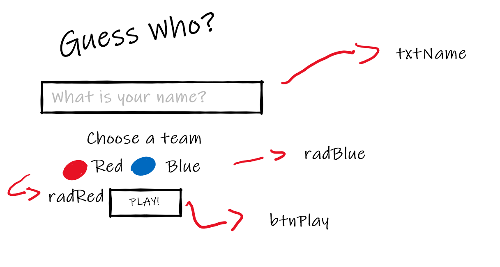
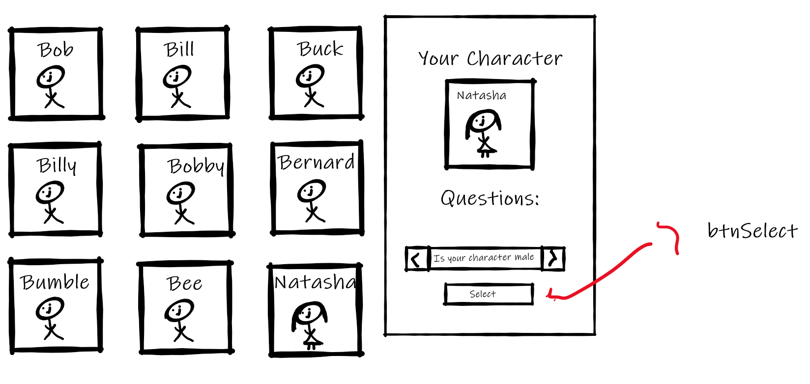
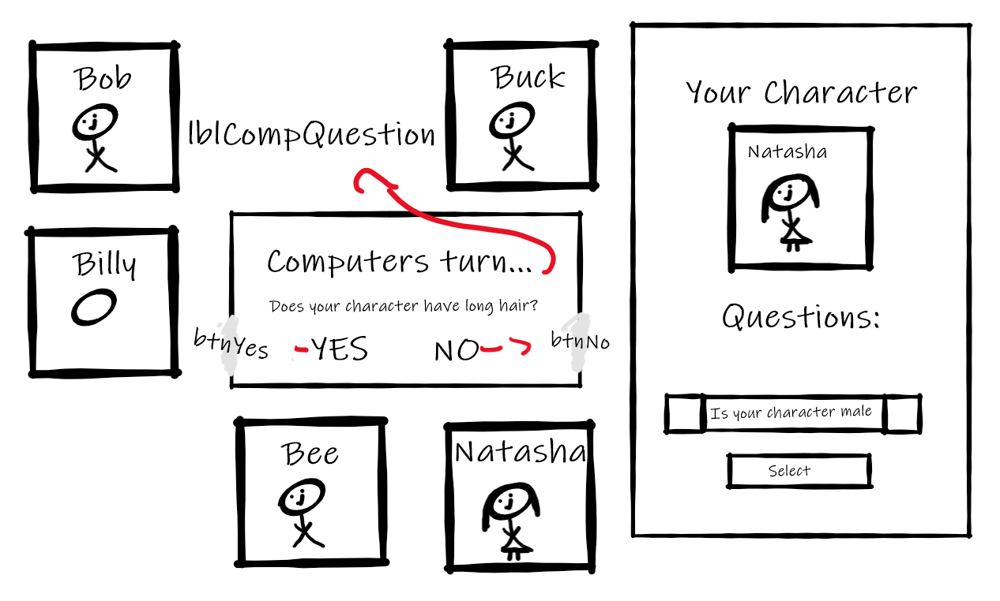
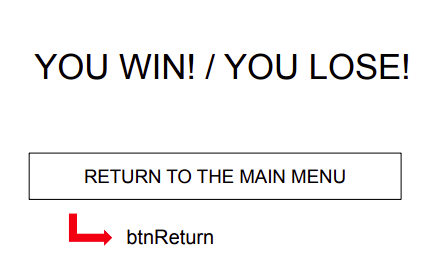

Menu ScreenThis is the menu screen of the game. This page will include a large title of the game, "Guess Who", a text box to input your name (txtName) and 2 radio buttons (radRed and radBlue) to choose which colour you would like your game board to be. Once all the conditions above are filled, you will be able to click the play button (btnPlay) to start playing the game. |
Game ScreenThis screen is the game board, where you will be able to select your character by clicking on the character profiles. It will also show you your selected character and the board with all of the characters. Once you have chosen your character, you can select certain questions on the side bar to determine the computer's character. After you have decided which question to ask, you can click "Submit question" (btnSubmit) to select and ask that question to the computer. Depending on the computer's answer, the characters will be automatically eliminated from the game board. |
Computer's Turn ScreenThis screen will appear once your turn is finished. It will then become the computer's turn to ask a question. This screen will show you the computer question (lblCompQuestion) and you will be given an opportunity to answer the question by clicking either the Yes button (btnYes) or the No button (btnNo). |
End ScreenThis screen will display once someone wins the game. This screen will either display; "You Win!" or "You Lose!" depending on who won and who lost. There will also be a button that will allow you to return to the game's menu (btnReturn) where you can play the game again. |